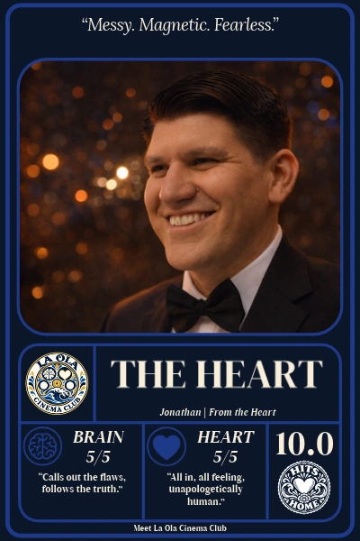

From the Brain
Brianna
One half of the conversation. Her score and her response have room to stand on their own—even when a film is simply outside her lane.
Brianna + Jonathan
La Ola Cinema Club is our place for the movies we watch and the conversations they leave behind. We bring two perspectives, and we don’t always leave the theater with the same opinion.

From the Brain
One half of the conversation. Her score and her response have room to stand on their own—even when a film is simply outside her lane.

From the Heart
The other half. What entertained, what connected, and what stayed with him after the screen went dark.
The collection began as Blockbuster Wave. La Ola Cinema Club carries it forward with new branding, genre colors, Club Stamps, and space for original ideas.
The older artwork is still here. It’s part of the collection’s history, alongside the newer Club cards. Every film keeps its place on the shelf.
The Club belongs to the wider OLA HQ world: a home for what we make, what we keep, and the ideas that become something more. The larger OLA Worlds cinema portal is a future chapter. This is where we watch, review, and imagine together now.